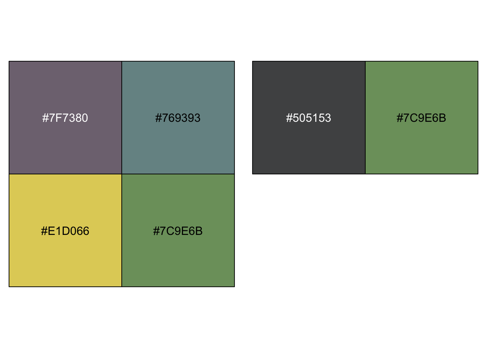

The purpose of this notebook is test the hypotheses that determined the design of the SGC4D study.
CODE
#UTILITIESlibrary(Hmisc) # %nin% operatorlibrary(broom) #tidy model outputlibrary(broom.mixed) #tidy mixed modelslibrary(mosaic) #favstatslibrary(svglite) #saving plots as svglibrary(distributional)#VISUALIZATION# library(ggpubr) #arrange plots# library(cowplot) #arrange shift function plotslibrary(ggformula) #easy graphslibrary(scales) # # library(vcd) #mosaic plots# # library(vcdExtra) #mosaic plotslibrary(kableExtra) #printing tableslibrary(sjPlot) #visualize model coefficientslibrary(ggdist) #uncertainty vizlibrary(modelr) #needed for ggdistlibrary(gghalves) # plots. in halflibrary(ggbeeswarm) # violin plot stuffslibrary(statsExpressions)library(ggstatsplot) #plots with statslibrary(modelsummary) #latex tables for models!library(cowplot) #arrange plots#MODELLING# library(rstatix) #helpful testing functions incl wilcoxon, etclibrary(report) #easystats reportinglibrary(see) #easystats visualizationlibrary(performance) #easystats model diagnosticslibrary(parameters) #easystats model summary and vislibrary(marginaleffects) #contrasts on brms multinomials # library(qqplotr) #confint on qq plot# library(gmodels) #contingency table and CHISQR# library(equatiomatic) #extract model equation# library(pscl) #zeroinfl / hurdle models library(lme4) #mixed effects modelslibrary(lmerTest) #for CIs in glmerlibrary(merTools) #predictIntervallibrary(emmeans) #estimated marginal effects and posthocs on interactions# library(ggeffects) #visualization log regr models#MULTINOMIAL library(nnet) #multinomial logistic regression [not mixed] #no p valueslibrary(mclogit) #frequentist mixed multinomial logistic regression [mblogit] #gives p values#BAYESIANlibrary(cmdstanr) #executing stanlibrary(brms) #bayesian mixed multinomials [+ other bayesian reg models]library(bayestestR) library(tidybayes)library(posterior)library(tidyverse) #ALL THE THINGS#OUTPUT OPTIONSlibrary(dplyr, warn.conflicts =FALSE)options(dplyr.summarise.inform =FALSE)options(ggplot2.summarise.inform =FALSE)options(scipen=1, digits=3)#GRAPH THEMEING# theme_set(theme_minimal()) # Custom ggplot theme to make pretty plots# Get the font at https://fonts.google.com/specimen/Barlow+Semi+Condensedtheme_clean <-function() {theme_minimal(base_family ="Barlow Semi Condensed") +theme(panel.grid.minor =element_blank(),plot.title =element_text(family ="BarlowSemiCondensed-Bold"),axis.title =element_text(family ="BarlowSemiCondensed-Medium"),strip.text =element_text(family ="BarlowSemiCondensed-Bold",size =rel(1), hjust =0),strip.background =element_rect(fill ="grey80", color =NA))}set_theme(base =theme_clean())##IMPORT CUSTOM COLOR PALETTESsource("analysis/utils/foxy_palettes.R")

CODE
set.seed(12345)
In SGC4D we set out to answer the following question: Does altering the SHAPE (from square/orthogonal to triangular) or SCALE (from isosceles to equilateral) improve performance on the interval graph comprehension task?
CODE
#IMPORT DATA df_all <-read_rds('analysis/SGC4D/data/2-scored-data/sgc4d_scored_participants.rds') %>%mutate(task_percent = DV_percent_NABS,SHAPE =recode_factor(condition, "111"="ORTH","113"="TRI","11111112"="ORTH","11311112"="TRI" ),SCALE =recode_factor(condition,"111"="isosceles","113"="isosceles","11111112"="equilateral","11311112"="equilateral" ))df_all_items <-read_rds('analysis/SGC4D/data/2-scored-data/sgc4d_scored_items.rds') %>%mutate (q =as.factor(q), subject =as.factor(subject),accuracy =recode_factor(score_niceABS, "0"="incorrect","1"="correct"),SHAPE =recode_factor(condition, "111"="ORTH","113"="TRI","11111112"="ORTH","11311112"="TRI" ),SCALE =recode_factor(condition,"111"="isosceles","113"="isosceles","11111112"="equilateral","11311112"="equilateral" ),# CODES TVERSKY AS TRI-LIKE# state = recode_factor(score_SCALED, #for ordinal# "-1" = "orth-like",# "-0.5" = "unknown",# "0" = "unknown",# "0.5" = "tri-like",# "1" = "tri-like"),# CODES TVERSKY AS OTHERstate =recode_factor(score_SCALED, #for ordinal"-1"="orthogonal","-0.5"="other","0"="other","0.5"="angular","1"="triangular"),state =as.ordered(state))##BECAUSE we have so many more 113 condition subjects, randomly sample 60 of themset.seed(1882)trisoc <- df_all %>%filter(condition ==113 ) %>%sample_n(60)other <- df_all %>%filter(condition !=113)df_subjects <-rbind(trisoc, other)favstats(s_NABS ~ pretty_condition, data = df_subjects)
Data was collected (online, via PROLIFIC) in Summer 2022. Data from equilateral conditions were joined with previously collected (online) data for for isosceles conditions.
CODE
title ="Participants by Condition and Data Collection Period"cols =c("Condition","Total for Period")cont <-table(df_subjects$pretty_condition)cont %>%addmargins() %>%kbl(caption = title, col.names = cols ) %>%kable_classic()
Participants by Condition and Data Collection Period
Condition
Total for Period
Orth-Isosceles
62
Tri-Isosceles
60
Orth-Equilateral
57
Tri-Equilateral
60
Sum
239
Participants
CODE
#Describe participantssubject.stats <-df_subjects %>% dplyr::select(age) %>%unlist() %>%favstats()subject.stats$percent.male <- ((df_subjects %>%filter(gender=="Male") %>%count())/count(df_subjects))$nsubject.stats$percent.female <- ((df_subjects %>%filter(gender=="Female") %>%count())/count(df_subjects))$nsubject.stats$percent.other <- ((df_subjects %>%filter(gender %nin%c("Female","Male")) %>%count())/count(df_subjects))$ntitle ="Descriptive Statistics of Participant Age and Gender"subject.stats %>%kbl (caption = title) %>%kable_classic()%>%footnote(general ="Age in Years", general_title ="Note: ",footnote_as_chunk = T)
Descriptive Statistics of Participant Age and Gender
min
Q1
median
Q3
max
mean
sd
n
missing
percent.male
percent.female
percent.other
18
20
22
32
71
27.4
11.1
239
0
0.423
0.548
0.029
Note: Age in Years
TODO
Overall 239 participants (42 % male, 55 % female, 3 % other) undergraduate STEM majors at a public American University participated in exchange for course credit (age: 18 - 71 years).
#:::::::: LABELLED # # temp <- df_i %>% mutate(# accuracy = fct_rev(accuracy)# ) # # #CREATE PLOT WITH LABELS# p <- grouped_ggbarstats(data = temp, x = accuracy, y = pretty_condition,# grouping.var = ospan_split,# results.subtitle = FALSE,# ggplot.component = ## modify further with `{ggplot2}` functions# list(# scale_fill_manual(values = paletteer::paletteer_d("lisa::FridaKahlo", 2))# # theme(axis.text.x = element_text(angle = 90)))# )) + theme_clean() # # #FIX LABELS# p1 <- p[[1]] + labs(# subtitle = "Impasse is particularly effective for subjects with high-working memory",# x = "Condition", y = "Probability of Response"# ) + theme_clean() + theme(legend.position = "blank") # # p2 <- p[[2]] + labs(# x = "Condition", y = "Probability of Response",# subtitle = " "# ) + theme_clean() + theme(legend.position = "blank") +# ggeasy::easy_remove_axes(which="y", what=c("text","title"))# # ggeasy::easy_remove_axes(which="y", what= ""))# # #CREATE ROW# # plot_row <- plot_grid(p1,p2, rel_widths = c(1,0.85))# # title <- ggdraw() + # draw_label(# "DISTRIBUTION | Question Accuracy",# fontface = 'bold',# x = 0,# hjust = 0# ) +# theme(# # add margin on the left of the drawing canvas,# # so title is aligned with left edge of first plot# plot.margin = margin(0, 0, 0, 7)# )# # # pg <- plot_grid(# title,# plot_row,# ncol = 1,# # rel_heights values control vertical title margins# rel_heights = c(0.1, 1)# ) + theme_clean()# # pg# ggsave(pg, filename = "figures/SGC4D_OSPAN_Accuracy.png", width = 6, height =4)
Describe
CODE
title ="Descriptive Statistics of Response Accuracy (Total % Correct)"tbl1 <- mosaic::favstats(~task_percent, data = df_s) tbl1 %>%kbl (caption = title) %>%kable_classic()
Descriptive Statistics of Response Accuracy (Total % Correct)
min
Q1
median
Q3
max
mean
sd
n
missing
0
0
0
0.154
1
0.203
0.34
239
0
CODE
title ="Descriptive Statistics of Response Accuracy (Total % Correct) BY CONDITION"tbl2 <- mosaic::favstats(task_percent ~ pretty_condition, data = df_s) tbl2 %>%kbl (caption = title) %>%kable_classic()
Descriptive Statistics of Response Accuracy (Total % Correct) BY CONDITION
pretty_condition
min
Q1
median
Q3
max
mean
sd
n
missing
Orth-Isosceles
0
0
0.000
0.154
1
0.211
0.370
62
0
Tri-Isosceles
0
0
0.077
0.692
1
0.287
0.384
60
0
Orth-Equilateral
0
0
0.000
0.077
1
0.119
0.255
57
0
Tri-Equilateral
0
0
0.077
0.154
1
0.191
0.317
60
0
TODO
Across both conditions, overall accuracy on the task ranges from 0 to 100 with a mean of 20.309. We see that the distribution of this outcome variable is clearly bimodal: with modes near the floor (0% correct) and ceiling (100% correct) of the scale. This bimodality is sensical considering the nature of the task, where each item in the task indexes a different information extraction operation over the same coordinate system.
Task level accuracy on the graph comprehension task follows the same pattern of behaviour observed in Study 4D: the distribution is bimodal. Total scores were higher in the impasse condition (M = 35%, SD = 41%, n = 65) than control condition (M = 15%, SD = 30%, n = 68), implying a likely main effect of scaffold condition. Comparing total scores across the median split on the OSPAN task (high working memory (vs) low working memory), we see readers with high working memory (M = 31 %, SD = 41%, n = 66) performed better than readers with low working memory (M = 19 %, SD = 31%, n = 67). In Figure \(\ref{fig_3C_ospan_raw_accuracy}\) we see that while readers in the impasse condition performed consistently better than those in the control condition, the effect is particularly pronounced for readers with high-working memory, implying a potential interaction between condition and working memory.
TESTS
Aligned Ranks Transformation
CODE
library(ARTool)m.art =art(task_percent ~ SHAPE*SCALE, data = df_s)anova(m.art)
Analysis of Variance of Aligned Rank Transformed Data
Table Type: Anova Table (Type III tests)
Model: No Repeated Measures (lm)
Response: art(task_percent)
Df Df.res F value Pr(>F)
1 SHAPE 1 235 3.8475 0.05 .
2 SCALE 1 235 1.5633 0.21
3 SHAPE:SCALE 1 235 0.4873 0.49
---
Signif. codes: 0 '***' 0.001 '**' 0.01 '*' 0.05 '.' 0.1 ' ' 1
Kruskal-Wallis rank sum test
data: df_s$task_percent by df_s$pretty_condition
Kruskal-Wallis chi-squared = 5, df = 3, p-value = 0.1
Visualize
CODE
#:::::::: STATSPLOT | VIOLINgrouped_ggbetweenstats(y = task_percent, x = SHAPE, grouping.var = SCALE, data = df_s, type ="nonparametric")
CODE
grouped_ggbetweenstats(y = task_percent, x = SCALE, grouping.var = SHAPE, data = df_s, type ="nonparametric")
MIXED LOGISTIC REGRESSION
Fit a mixed logistic regression (at the item level), predicting accuracy (absolute score) on all discriminating questions by condition; accounting for random effects of subject and item.
Warning in checkConv(attr(opt, "derivs"), opt$par, ctrl = control$checkConv, :
Model failed to converge with max|grad| = 0.192238 (tol = 0.002, component 1)
Warning in checkConv(attr(opt, "derivs"), opt$par, ctrl = control$checkConv, : Model is nearly unidentifiable: very large eigenvalue
- Rescale variables?
CODE
#summary(mm.CrSQ)# car::Anova(mm.CrSQ)## 2 | ADD MAIN EFFECTS SHAPEprint("FIXED Scale + FIXED Shape + Subject & Item random intercepts")
mm.R.S.rSQ <-glmer(accuracy ~ SCALE + SHAPE + (1|subject) + (1|q) ,data = df_i, family ="binomial")#summary(mm.R.S.rSQ)# car::Anova(mm.R.S.rSQ, type = 2)# shape term shape significant with directional test (p/2)paste("AIC decreases w/ new model", AIC(logLik(mm.rSQ)) >AIC(logLik(mm.R.S.rSQ)) )
[1] "AIC decreases w/ new model FALSE"
CODE
test_lrt(mm.rSQ,mm.R.S.rSQ) #same as anova(m0, m1, test = "Chi")
# Likelihood-Ratio-Test (LRT) for Model Comparison (ML-estimator)
Name | Model | df | df_diff | Chi2 | p
---------------------------------------------------
mm.rSQ | glmerMod | 3 | | |
mm.R.S.rSQ | glmerMod | 5 | 2 | 3.41 | 0.182
CODE
paste("Likelihood Ratio test is significant? p = ",(test_lrt(mm.rSQ,mm.R.S.rSQ))$p[2])
[1] "Likelihood Ratio test is significant? p = 0.182050590038501"
CODE
#adding shape predictor improves fit# predictor model is not a significantly better fit than random only. but we proceed with it# for the purpose of quantifying the size of the small effect## 3 | ADD INTERACTION TERM,print("FIXED Scale * Shape + Subject & Item random intercepts")
To explore the effect of working memory capacity on ACCURACY, we fit a mixed effects logistic regression model with random intercepts for subjects and questions, with SHAPE AND SCALE as fixed effects A likelihood ratio test indicates that a model including these main effects explains significantly more variance in the data than an intercepts-only baseline model (\(\chi^2 (3,6) = 105.93, p < 0.001\)). We also fit a model including an interaction term between SHAPE and SCALE, however a likelihood ratio test indicated that adding the interaction term did not improve model fit (\(\chi^2 (6,8) = 0.18, p = 0.91\)) Therefore we chose the simple main effects model (with random intercepts) as the final model.
The explanatory power of the entire model is substantial (\(conditional \ R^2 = 0.80\)) and the part related to the fixed effects SHAPE and SCALE (\(marginal \ R^2\)) explains 20% of variance.
Describe
CODE
# best modelm <- mm.R.S.rSQ #MAIN EFFECTS MODELm %>%write_rds(file ="analysis/SGC4D/models/sgc4d_glmer_acc_mm.R.S.rSQ.rds")#::::::::: PRINT MODEL print("PREDICTOR MODEL")
[1] "PREDICTOR MODEL"
CODE
summary(m)
Generalized linear mixed model fit by maximum likelihood (Laplace
Approximation) [glmerMod]
Family: binomial ( logit )
Formula: accuracy ~ SCALE + SHAPE + (1 | subject) + (1 | q)
Data: df_i
AIC BIC logLik deviance df.resid
1462 1493 -726 1452 3102
Scaled residuals:
Min 1Q Median 3Q Max
-8.846 -0.100 -0.028 -0.012 6.446
Random effects:
Groups Name Variance Std.Dev.
subject (Intercept) 43.175 6.571
q (Intercept) 0.634 0.797
Number of obs: 3107, groups: subject, 239; q, 13
Fixed effects:
Estimate Std. Error z value Pr(>|z|)
(Intercept) -7.443 1.988 -3.74 0.00018 ***
SCALEequilateral -0.751 0.948 -0.79 0.42819
SHAPETRI 2.050 1.152 1.78 0.07516 .
---
Signif. codes: 0 '***' 0.001 '**' 0.01 '*' 0.05 '.' 0.1 ' ' 1
Correlation of Fixed Effects:
(Intr) SCALEq
SCALEeqltrl -0.555
SHAPETRI 0.414 -0.213
Although Wald Chi-Square tests revealed significant main effects of both SHAPE (\(\chi^2 (1) = 10.8, p < 0.001\)) and SCALE (\(\chi^2 (1) = 94.9, p < 0.001\)).
The model predicts that, for ORTHOGONAL shaped graphs, rotating the graph from 0 to 45 degrees increases the probability of a correct response from 1% to 47%. Further rotating the graph to 90 degrees however, results in a probability of only 3%. Posthoc comparisons indicate that the difference between 0 and 90 degree rotation is not significant (OR = 0.60, SE = 0.26 , p = 0.24)
The model predicts that, for TRIANGULAR shaped graphs, rotating the graph from 0 to 45 degrees increases the probability of a correct response from 5% to 74%. Further rotating the graph to 90 degrees however, results in a probability of only 9%. Posthoc comparisons indicate that the difference between 0 and 90 degree rotation is not significant (OR = 0.60, SE = 0.26 = 0.25).
Across both graph shapes, rotating the graph from 0 to 90 degrees results in a minor improvement in accuracy, while rotating the graph halfway between results in a substantial improvement in accuracy. Posthoc comparisons also reveal that across all levels of rotation, the triangular shape was significantly better than the orthogonal shape.
## | PLOT PREDICTIONS# #SJPLOT | MODEL | PROBABILITIES# plot_model(m, type="int",# show.intercept = TRUE,# show.values = TRUE,# title = "Model Prediction | Probability of Accurate Response",# axis.title = c("Condition","Probability of Accurate Response"))#PLOT MODEL PREDICTIONplot_model(m, type ="pred", terms =c("SHAPE", "SCALE"))
CODE
plot_model(m, type ="eff", terms =c("SHAPE", "SCALE"))
CODE
# ylim(0,1) + # labs(# title = "Model Prediction | Probability of Accurate Response",# subtitle = "Impasse increases Probability of Correct Response"# )#GGDIST | MODEL | PREDICTED PROBABILITIES# preds %>% # ggplot(aes( x = fit, y = SCALE, fill = SHAPE)) + # stat_halfeye(alpha = 0.5, normalize = "panels") + # xlim(0,0.3) + theme_clean() + labs(# title = "Model PREDICTION | Probability of Accurate Response",# subtitle = "TODO check preds to see if fixed or includes random"# )
CODE
## PLOT INTERACTIONlibrary(ggeffects)
Attaching package: 'ggeffects'
The following object is masked from 'package:cowplot':
get_title
The following object is masked from 'package:modelr':
data_grid
orthogonal [reference category] includes orthogonal and satisficing responses ==> indicates a primarily orthogonal state of coordinate system understanding
other includes: blank, reference point, responses that cant be classified (including selecting all datapoints), => indicates an uncertain or unidentifiable state of coordinate system understanding, but one that is distinctly not orthogonal nor triangular
angular includes lines connecting responses as well as responses that include both orthogonal and triangular answers => indicates some degree of angular/triangular coordinate understanding
triangular includes correct triangular => indicates a correct triangular coordinate understanding
#:::::::: LABELLED # temp <- df_i %>% mutate(# state = fct_rev(state)# ) # # p <- grouped_ggbarstats(data = temp, x = state, y = pretty_condition,# grouping.var = ospan_split,# results.subtitle = FALSE,# ggplot.component = ## modify further with `{ggplot2}` functions# list(# scale_fill_manual(values = paletteer::paletteer_d("ggthemes::calc", 4))# # theme(axis.text.x = element_text(angle = 90)))# )) + theme_clean() + theme(legend.position = "bottom")# # p <- p + labs(title = "DISTRIBUTION | Question Accuracy",# y = "Proportion of Questions", x = "Condition",# subtitle = "Impasse condition yields more correct responses")# # p# # ggsave(p, filename = "figures/SGC4D_LAB_Accuracy.png", width = 6, height =4)#:::::::: LABELLED # # temp <- df_i # # %>% mutate(# # accuracy = fct_rev(accuracy)# # )# # #CREATE PLOT WITH LABELS# p <- grouped_ggbarstats(data = temp, x = state, y = pretty_condition,# grouping.var = ospan_split,# results.subtitle = FALSE,# ggplot.component = ## modify further with `{ggplot2}` functions# list(# scale_fill_manual(values = paletteer::paletteer_d("ggthemes::calc", 4))# # theme(axis.text.x = element_text(angle = 90)))# )) # # #FIX LABELS# p1 <- p[[1]] + labs(# subtitle = "Impasse is particularly effective for subjects with high-working memory",# x = "Condition", y = "Probability of Response"# ) + theme_clean() + theme(legend.position = "blank") # # p2 <- p[[2]] + labs(# x = "Condition", y = "Probability of Response",# subtitle = " "# ) + theme_clean() + theme(legend.position = "blank") +# ggeasy::easy_remove_axes(which="y", what=c("text","title"))# # ggeasy::easy_remove_axes(which="y", what= ""))# # #CREATE ROW# # plot_row <- plot_grid(p1,p2, rel_widths = c(1,0.85))# # title <- ggdraw() + # draw_label(# "DISTRIBUTION | Question Accuracy",# fontface = 'bold',# x = 0,# hjust = 0# ) +# theme(# # add margin on the left of the drawing canvas,# # so title is aligned with left edge of first plot# plot.margin = margin(0, 0, 0, 7)# )# # # pg <- plot_grid(# title,# plot_row,# ncol = 1,# # rel_heights values control vertical title margins# rel_heights = c(0.1, 1)# ) + theme_clean()# # # update_geom_defaults("text", list(colour = "grey20", family = theme_get()$text$family))# # # pg# ggsave(pg, filename = "figures/SGC4D_OSPAN_Accuracy.png", width = 6, height =4)
Describe
CODE
#::::::::::::DESCRIPTIVEStable(df_i$state, df_i$pretty_condition) %>%addmargins(2) %>%#display sum for rowprop.table(margin=2) %>%#return proportion (of column)addmargins(1) #sanity check sum of columns
Orth-Isosceles Tri-Isosceles Orth-Equilateral Tri-Equilateral
orthogonal 0.6960 0.5423 0.6694 0.5705
other 0.0682 0.1179 0.1498 0.1846
angular 0.0248 0.0526 0.0621 0.0538
triangular 0.2109 0.2872 0.1188 0.1910
Sum 1.0000 1.0000 1.0000 1.0000
Sum
orthogonal 0.6196
other 0.1294
angular 0.0480
triangular 0.2031
Sum 1.0000
CODE
(t <-table(df_i$state, df_i$SCALE, df_i$SHAPE) %>%addmargins(2) %>%#display sum for rowaddmargins(1)) #sanity check sum of columns
, , = ORTH
isosceles equilateral Sum
orthogonal 561 496 1057
other 55 111 166
angular 20 46 66
triangular 170 88 258
Sum 806 741 1547
, , = TRI
isosceles equilateral Sum
orthogonal 423 445 868
other 92 144 236
angular 41 42 83
triangular 224 149 373
Sum 780 780 1560
MIXED MULTINOMIAL REGRESSION
Does condition affect the response state of of items across the task?
Fit a MIXED logistic regression predicting interpretation state (k=3) by condition(k = 2).
Fit Model [brms]
CODE
##1. In order to set priors, first fit default priors model, then get prior description## in order to get class and dpar names # FLAT MODEL# flat <- brm( state ~ SCALE + SHAPE + (1|subject) + (1|q),# data = df_i,# family = "categorical",# chains = 4, iter = 2000, warmup = 1000,# cores = 4, seed = 1234,# save_pars = save_pars(all = TRUE),# control = list(adapt_delta = 0.98), # to deal with divergent transitions# backend = "cmdstanr")# # prior_summary(flat)inf_priors_maineffects <-c(#prior on INTERCEPTS #25% chance of each answer in control, scale = from 0.01 to 62%prior(normal(-1.1, 1.5), class ="Intercept", dpar ="muangular"),prior(normal(-1.1, 1.5), class ="Intercept", dpar ="muother"),prior(normal(-1.1, 1.5), class ="Intercept", dpar ="mutriangular"),#prior on COEFFICIENT#likely to change odds between 0 and 2.4# coefficient level scale equilateral prior(normal(0, 2.42), class = b, coef="SCALEequilateral", dpar ="muangular"),prior(normal(0, 2.42), class = b, coef="SCALEequilateral", dpar ="muother"),prior(normal(0, 2.42), class = b, coef="SCALEequilateral", dpar ="mutriangular"),#coeficient level shape triprior(normal(0, 2.42), class = b, coef="SHAPETRI", dpar ="muangular"),prior(normal(0, 2.42), class = b, coef="SHAPETRI", dpar ="muother"),prior(normal(0, 2.42), class = b, coef="SHAPETRI", dpar ="mutriangular"))inf_priors_ixn <-c(#prior on INTERCEPTS#25% chance of each answer in control, scale = from 0.01 to 62%prior(normal(-1.1, 1.5), class ="Intercept", dpar ="muangular"),prior(normal(-1.1, 1.5), class ="Intercept", dpar ="muother"),prior(normal(-1.1, 1.5), class ="Intercept", dpar ="mutriangular"),#prior on CONDITION COEFFICIENT# coefficient level scale equilateral prior(normal(0, 2.42), class = b, coef="SCALEequilateral", dpar ="muangular"),prior(normal(0, 2.42), class = b, coef="SCALEequilateral", dpar ="muother"),prior(normal(0, 2.42), class = b, coef="SCALEequilateral", dpar ="mutriangular"),#coeficient level shape triprior(normal(0, 2.42), class = b, coef="SHAPETRI", dpar ="muangular"),prior(normal(0, 2.42), class = b, coef="SHAPETRI", dpar ="muother"),prior(normal(0, 2.42), class = b, coef="SHAPETRI", dpar ="mutriangular"),#prior on IXN COEFFICIENT#likely to change odds between 0 and 2.4prior(normal(0, 2.42), class = b, coef="SCALEequilateral:SHAPETRI", dpar ="muangular"),prior(normal(0, 2.42), class = b, coef="SCALEequilateral:SHAPETRI", dpar ="muother"),prior(normal(0, 2.42), class = b, coef="SCALEequilateral:SHAPETRI", dpar ="mutriangular"))#BAYESIAN RANDOM ONLYBmm.cat.rSQ <-brm( state ~1+ (1|subject) + (1|q), data = df_i, family ="categorical",chains =4, iter =2500, warmup =1000,cores =4, seed =1234,save_pars =save_pars(all =TRUE),backend ="cmdstanr",file ="analysis/SGC4D/models/sgc4d_brms_state_Bmm.cat.rSQ.rds")# MAIN EFFECTSONLY MODELBmm.cat.R.SrSQ <-brm( state ~ SCALE + SHAPE + (1|subject) + (1|q), data = df_i, prior = inf_priors_maineffects,family ="categorical",chains =4, iter =4000, warmup =1000,cores =4, seed =1234,save_pars =save_pars(all =TRUE),control =list(adapt_delta =0.98), # to deal with divergent transitionsbackend ="cmdstanr",file ="analysis/SGC4D/models/sgc4d_brms_state_Bmm.cat.R.SrSQ.rds")##MODEL COMPARISON# print("MODEL COMPARISON: random effects (vs) CONDITION")(bf1 <-bayesfactor(Bmm.cat.R.SrSQ,Bmm.cat.rSQ))
Warning: Bayes factors might not be precise.
For precise Bayes factors, sampling at least 40,000 posterior samples is recommended.
Computation of Bayes factors: estimating marginal likelihood, please wait...
Recompiling the model with 'rstan'
Running /Library/Frameworks/R.framework/Resources/bin/R CMD SHLIB foo.c
clang -mmacosx-version-min=10.13 -I"/Library/Frameworks/R.framework/Resources/include" -DNDEBUG -I"/Library/Frameworks/R.framework/Versions/4.2/Resources/library/Rcpp/include/" -I"/Library/Frameworks/R.framework/Versions/4.2/Resources/library/RcppEigen/include/" -I"/Library/Frameworks/R.framework/Versions/4.2/Resources/library/RcppEigen/include/unsupported" -I"/Library/Frameworks/R.framework/Versions/4.2/Resources/library/BH/include" -I"/Library/Frameworks/R.framework/Versions/4.2/Resources/library/StanHeaders/include/src/" -I"/Library/Frameworks/R.framework/Versions/4.2/Resources/library/StanHeaders/include/" -I"/Library/Frameworks/R.framework/Versions/4.2/Resources/library/RcppParallel/include/" -I"/Library/Frameworks/R.framework/Versions/4.2/Resources/library/rstan/include" -DEIGEN_NO_DEBUG -DBOOST_DISABLE_ASSERTS -DBOOST_PENDING_INTEGER_LOG2_HPP -DSTAN_THREADS -DBOOST_NO_AUTO_PTR -include '/Library/Frameworks/R.framework/Versions/4.2/Resources/library/StanHeaders/include/stan/math/prim/mat/fun/Eigen.hpp' -D_REENTRANT -DRCPP_PARALLEL_USE_TBB=1 -I/usr/local/include -fPIC -Wall -g -O2 -c foo.c -o foo.o
In file included from <built-in>:1:
In file included from /Library/Frameworks/R.framework/Versions/4.2/Resources/library/StanHeaders/include/stan/math/prim/mat/fun/Eigen.hpp:13:
In file included from /Library/Frameworks/R.framework/Versions/4.2/Resources/library/RcppEigen/include/Eigen/Dense:1:
In file included from /Library/Frameworks/R.framework/Versions/4.2/Resources/library/RcppEigen/include/Eigen/Core:88:
/Library/Frameworks/R.framework/Versions/4.2/Resources/library/RcppEigen/include/Eigen/src/Core/util/Macros.h:628:1: error: unknown type name 'namespace'
namespace Eigen {
^
/Library/Frameworks/R.framework/Versions/4.2/Resources/library/RcppEigen/include/Eigen/src/Core/util/Macros.h:628:16: error: expected ';' after top level declarator
namespace Eigen {
^
;
In file included from <built-in>:1:
In file included from /Library/Frameworks/R.framework/Versions/4.2/Resources/library/StanHeaders/include/stan/math/prim/mat/fun/Eigen.hpp:13:
In file included from /Library/Frameworks/R.framework/Versions/4.2/Resources/library/RcppEigen/include/Eigen/Dense:1:
/Library/Frameworks/R.framework/Versions/4.2/Resources/library/RcppEigen/include/Eigen/Core:96:10: fatal error: 'complex' file not found
#include <complex>
^~~~~~~~~
3 errors generated.
make: *** [foo.o] Error 1
Recompilation done
Warning: logml could not be estimated within maxiter, rerunning with adjusted starting value.
Estimate might be more variable than usual.
Recompiling the model with 'rstan'
Running /Library/Frameworks/R.framework/Resources/bin/R CMD SHLIB foo.c
clang -mmacosx-version-min=10.13 -I"/Library/Frameworks/R.framework/Resources/include" -DNDEBUG -I"/Library/Frameworks/R.framework/Versions/4.2/Resources/library/Rcpp/include/" -I"/Library/Frameworks/R.framework/Versions/4.2/Resources/library/RcppEigen/include/" -I"/Library/Frameworks/R.framework/Versions/4.2/Resources/library/RcppEigen/include/unsupported" -I"/Library/Frameworks/R.framework/Versions/4.2/Resources/library/BH/include" -I"/Library/Frameworks/R.framework/Versions/4.2/Resources/library/StanHeaders/include/src/" -I"/Library/Frameworks/R.framework/Versions/4.2/Resources/library/StanHeaders/include/" -I"/Library/Frameworks/R.framework/Versions/4.2/Resources/library/RcppParallel/include/" -I"/Library/Frameworks/R.framework/Versions/4.2/Resources/library/rstan/include" -DEIGEN_NO_DEBUG -DBOOST_DISABLE_ASSERTS -DBOOST_PENDING_INTEGER_LOG2_HPP -DSTAN_THREADS -DBOOST_NO_AUTO_PTR -include '/Library/Frameworks/R.framework/Versions/4.2/Resources/library/StanHeaders/include/stan/math/prim/mat/fun/Eigen.hpp' -D_REENTRANT -DRCPP_PARALLEL_USE_TBB=1 -I/usr/local/include -fPIC -Wall -g -O2 -c foo.c -o foo.o
In file included from <built-in>:1:
In file included from /Library/Frameworks/R.framework/Versions/4.2/Resources/library/StanHeaders/include/stan/math/prim/mat/fun/Eigen.hpp:13:
In file included from /Library/Frameworks/R.framework/Versions/4.2/Resources/library/RcppEigen/include/Eigen/Dense:1:
In file included from /Library/Frameworks/R.framework/Versions/4.2/Resources/library/RcppEigen/include/Eigen/Core:88:
/Library/Frameworks/R.framework/Versions/4.2/Resources/library/RcppEigen/include/Eigen/src/Core/util/Macros.h:628:1: error: unknown type name 'namespace'
namespace Eigen {
^
/Library/Frameworks/R.framework/Versions/4.2/Resources/library/RcppEigen/include/Eigen/src/Core/util/Macros.h:628:16: error: expected ';' after top level declarator
namespace Eigen {
^
;
In file included from <built-in>:1:
In file included from /Library/Frameworks/R.framework/Versions/4.2/Resources/library/StanHeaders/include/stan/math/prim/mat/fun/Eigen.hpp:13:
In file included from /Library/Frameworks/R.framework/Versions/4.2/Resources/library/RcppEigen/include/Eigen/Dense:1:
/Library/Frameworks/R.framework/Versions/4.2/Resources/library/RcppEigen/include/Eigen/Core:96:10: fatal error: 'complex' file not found
#include <complex>
^~~~~~~~~
3 errors generated.
make: *** [foo.o] Error 1
Recompilation done
Warning: logml could not be estimated within maxiter, rerunning with adjusted starting value.
Estimate might be more variable than usual.
Bayes Factors for Model Comparison
Model BF
[2] 1 + (1 | subject) + (1 | q) 1.71e+07
* Against Denominator: [1] SCALE + SHAPE + (1 | subject) + (1 | q)
* Bayes Factor Type: marginal likelihoods (bridgesampling)
CODE
#substantial evidence in favor of conditon model over random only BF 1.64e+16# # INTERACTION MODELBmm.cat.RSrSQ <-brm( state ~ SCALE*SHAPE + (1|subject) + (1|q),data = df_i,prior = inf_priors_ixn,family ="categorical",chains =4, iter =4000, warmup =1000,cores =4, seed =1234,save_pars =save_pars(all =TRUE),control =list(adapt_delta =0.98), # to deal with divergent transitionsbackend ="cmdstanr",file ="analysis/SGC4D/models/sgc4d_brms_state_Bmm.cat.RSrSQ.rds")#describe_posterior(Bmm.cat.RSrSQ)##MODEL COMPARISONprint("IS FACTORIAL better than MAIN EFFECTS model?")
[1] "IS FACTORIAL better than MAIN EFFECTS model?"
Warning: Bayes factors might not be precise.
For precise Bayes factors, sampling at least 40,000 posterior samples is recommended.
Computation of Bayes factors: estimating marginal likelihood, please wait...
Recompiling the model with 'rstan'
Recompilation done
Warning: logml could not be estimated within maxiter, rerunning with adjusted starting value.
Estimate might be more variable than usual.
Recompiling the model with 'rstan'
Running /Library/Frameworks/R.framework/Resources/bin/R CMD SHLIB foo.c
clang -mmacosx-version-min=10.13 -I"/Library/Frameworks/R.framework/Resources/include" -DNDEBUG -I"/Library/Frameworks/R.framework/Versions/4.2/Resources/library/Rcpp/include/" -I"/Library/Frameworks/R.framework/Versions/4.2/Resources/library/RcppEigen/include/" -I"/Library/Frameworks/R.framework/Versions/4.2/Resources/library/RcppEigen/include/unsupported" -I"/Library/Frameworks/R.framework/Versions/4.2/Resources/library/BH/include" -I"/Library/Frameworks/R.framework/Versions/4.2/Resources/library/StanHeaders/include/src/" -I"/Library/Frameworks/R.framework/Versions/4.2/Resources/library/StanHeaders/include/" -I"/Library/Frameworks/R.framework/Versions/4.2/Resources/library/RcppParallel/include/" -I"/Library/Frameworks/R.framework/Versions/4.2/Resources/library/rstan/include" -DEIGEN_NO_DEBUG -DBOOST_DISABLE_ASSERTS -DBOOST_PENDING_INTEGER_LOG2_HPP -DSTAN_THREADS -DBOOST_NO_AUTO_PTR -include '/Library/Frameworks/R.framework/Versions/4.2/Resources/library/StanHeaders/include/stan/math/prim/mat/fun/Eigen.hpp' -D_REENTRANT -DRCPP_PARALLEL_USE_TBB=1 -I/usr/local/include -fPIC -Wall -g -O2 -c foo.c -o foo.o
In file included from <built-in>:1:
In file included from /Library/Frameworks/R.framework/Versions/4.2/Resources/library/StanHeaders/include/stan/math/prim/mat/fun/Eigen.hpp:13:
In file included from /Library/Frameworks/R.framework/Versions/4.2/Resources/library/RcppEigen/include/Eigen/Dense:1:
In file included from /Library/Frameworks/R.framework/Versions/4.2/Resources/library/RcppEigen/include/Eigen/Core:88:
/Library/Frameworks/R.framework/Versions/4.2/Resources/library/RcppEigen/include/Eigen/src/Core/util/Macros.h:628:1: error: unknown type name 'namespace'
namespace Eigen {
^
/Library/Frameworks/R.framework/Versions/4.2/Resources/library/RcppEigen/include/Eigen/src/Core/util/Macros.h:628:16: error: expected ';' after top level declarator
namespace Eigen {
^
;
In file included from <built-in>:1:
In file included from /Library/Frameworks/R.framework/Versions/4.2/Resources/library/StanHeaders/include/stan/math/prim/mat/fun/Eigen.hpp:13:
In file included from /Library/Frameworks/R.framework/Versions/4.2/Resources/library/RcppEigen/include/Eigen/Dense:1:
/Library/Frameworks/R.framework/Versions/4.2/Resources/library/RcppEigen/include/Eigen/Core:96:10: fatal error: 'complex' file not found
#include <complex>
^~~~~~~~~
3 errors generated.
make: *** [foo.o] Error 1
Recompilation done
Warning: logml could not be estimated within maxiter, rerunning with adjusted starting value.
Estimate might be more variable than usual.
Possible multicollinearity between b_muother_SCALEequilateral:SHAPETRI and b_muother_SCALEequilateral (r = 0.71), b_muother_SCALEequilateral:SHAPETRI and b_muother_SHAPETRI (r = 0.71), b_muangular_SCALEequilateral:SHAPETRI and b_muangular_SCALEequilateral (r = 0.71), b_muangular_SCALEequilateral:SHAPETRI and b_muangular_SHAPETRI (r = 0.7). This might lead to inappropriate results. See 'Details' in '?rope'.
To quantify the effect of working memory capacity on INTERPRETATION, we fit a (bayesian) mixed multinomial regression model with random intercepts for subjects and questions.
A Bayes Factor model comparison (against a random intercepts only model) indicates extreme evidence for the final model including fixed effects of CONDITION, OSPAN and their interaction term (BF = 1.69e+13)
(note, the BF may change as it is estimated via simulation each time)
Describe
CODE
# best model? can't tell if main effects or interactionm <- Bmm.cat.R.SrSQ #or Bmm.cat.R.SrSQ#::::::::: PRINT MODEL print("PREDICTOR MODEL")
[1] "PREDICTOR MODEL"
CODE
summary(m)
Family: categorical
Links: muother = logit; muangular = logit; mutriangular = logit
Formula: state ~ SCALE + SHAPE + (1 | subject) + (1 | q)
Data: df_i (Number of observations: 3107)
Draws: 4 chains, each with iter = 4000; warmup = 1000; thin = 1;
total post-warmup draws = 12000
Group-Level Effects:
~q (Number of levels: 13)
Estimate Est.Error l-95% CI u-95% CI Rhat Bulk_ESS
sd(muother_Intercept) 1.74 0.40 1.14 2.73 1.00 3297
sd(muangular_Intercept) 1.59 0.44 0.95 2.67 1.00 3835
sd(mutriangular_Intercept) 1.46 0.37 0.93 2.34 1.00 3890
Tail_ESS
sd(muother_Intercept) 5695
sd(muangular_Intercept) 6055
sd(mutriangular_Intercept) 5911
~subject (Number of levels: 239)
Estimate Est.Error l-95% CI u-95% CI Rhat Bulk_ESS
sd(muother_Intercept) 1.79 0.16 1.50 2.11 1.00 3907
sd(muangular_Intercept) 2.16 0.25 1.71 2.68 1.00 3306
sd(mutriangular_Intercept) 5.40 0.50 4.51 6.45 1.00 3009
Tail_ESS
sd(muother_Intercept) 7221
sd(muangular_Intercept) 5898
sd(mutriangular_Intercept) 4655
Population-Level Effects:
Estimate Est.Error l-95% CI u-95% CI Rhat
muother_Intercept -3.45 0.55 -4.51 -2.36 1.00
muangular_Intercept -4.54 0.60 -5.73 -3.37 1.00
mutriangular_Intercept -4.26 0.82 -5.91 -2.70 1.00
muother_SCALEequilateral 0.89 0.29 0.32 1.46 1.00
muother_SHAPETRI 1.02 0.30 0.44 1.62 1.00
muangular_SCALEequilateral 0.51 0.39 -0.24 1.28 1.00
muangular_SHAPETRI 0.96 0.39 0.22 1.74 1.00
mutriangular_SCALEequilateral -0.72 0.77 -2.24 0.79 1.00
mutriangular_SHAPETRI 1.66 0.78 0.18 3.26 1.00
Bulk_ESS Tail_ESS
muother_Intercept 2379 4427
muangular_Intercept 3453 5785
mutriangular_Intercept 2125 3595
muother_SCALEequilateral 4004 5614
muother_SHAPETRI 3664 5547
muangular_SCALEequilateral 5633 7571
muangular_SHAPETRI 5214 7007
mutriangular_SCALEequilateral 1725 3508
mutriangular_SHAPETRI 1617 2690
Draws were sampled using sample(hmc). For each parameter, Bulk_ESS
and Tail_ESS are effective sample size measures, and Rhat is the potential
scale reduction factor on split chains (at convergence, Rhat = 1).
print("BAYES FACTOR [comparison to RANDOM ONLY model]")
[1] "BAYES FACTOR [comparison to RANDOM ONLY model]"
CODE
#think of this like the anova(model) to get p values for each predictor#has to recompile the models with rstan. total drag#already calculated bayes factor above, this just interprets iteffectsize::interpret_bf(exp(bf1$log_BF), include_value =TRUE)
[1] "no evidence (BF = 1.00) against or in favour of"
[2] "extreme evidence (BF = 1.71e+07) in favour of"
(Rules: jeffreys1961)
The model predicts similar probabilities for orthogonal, other, and angular interpretations by high vs. low working memory participants. It is only the (correct) triangular interpretation in which we have evidence for a reliable interaction between OSPAN and CONDITION.
It is only the (correct) triangular interpretation in which we have moderate evidence for a reliable interaction between OSPAN and CONDITION ($e^{_{interaction}} = 15.73, 95 % CI [0.89, 249.91], pd = 97.3%, BF = 3.86 $)
Much like the pattern of results for accuracy, it is high working memory participants with higher probability of triangular responses, but only in impasse condition.
Interactions
CODE
#EMMEANS doesn't support multinomial brms models. BUMMER#BUT brms has some built in stuffs. # FOR MAIN EFFECTS PLOTS print("MAIN EFFECTS")
[1] "MAIN EFFECTS"
CODE
conditional_effects(m, categorical =TRUE)
CODE
print("INTERACTION PLOT")
[1] "INTERACTION PLOT"
CODE
conditions <-make_conditions(m, vars =c("SHAPE"))conditional_effects(m, "SCALE", conditions = conditions,categorical =TRUE)
CODE
print("INTERACTION PLOT")
[1] "INTERACTION PLOT"
CODE
# plot_model(m, type="int")## MARGINAL EFFECTS# from easystats # library(modelbased)# uses emmeans, doesn't support brms categorical # estimate_contrasts(m, test = "bf", bf_prior = m)# library(marginaleffects)# https://vincentarelbundock.github.io/marginaleffects/articles/brms.html## takes a really long time... maybe hangs machine??# (mfx <- marginaleffects::marginaleffects(m))# summary(mfx)
##TODO see documentation for removing, reorganizing parametersresult <-pd(m, effects ="fixed", component ="all")plot(result, show_intercept =FALSE,n_columns =3)
CODE
## | PLOT PREDICTIONS#SJPLOT | MODEL | PROBABILITIES# plot_model(m, type="int",# show.intercept = TRUE,# show.values = TRUE,# title = "Model Prediction | Probability of Accurate Response",# axis.title = c("Condition","Probability of Accurate Response"))#PLOT MODEL PREDICTION# plot_model(m, type = "pred") # plot_model(m, type = "eff") # ylim(0,1) + # labs(# title = "Model Prediction | Probability of Accurate Response",# subtitle = "Impasse increases Probability of Correct Response"# )
CODE
#::::: GGDIST POSTERIOR PROBABILITY OF RESPONSE##WORKING# https://mjskay.github.io/ggdist/reference/stat_slab.html## VIS probability of correct response#TAKES A REALLY LONG TIME#1 | get draws# draws <- df_i %>%# data_grid(pretty_condition, ospan_split, subject, q) %>%# add_epred_draws(m,# # ndraws = 100, # n = 100,# # dpar = TRUE,# transform = TRUE, #gives prob%, otherwise OR# re_formula = NA)# draws %>% write_rds(file = "analysis/SGC4D/models/draws/draws_Bmm.catCOrSQ_OPSAN.rds")#OR load from file# draws <- read_rds(file = "analysis/SGC4D/models/draws/draws_Bmm.catCOrSQ_OPSAN.rds")#2| VISUALIZE PREDICTIONS | GGDIST##TODO figure out height normalization.##do it with much smaller number of draws #TODO adjust bandwidth/smoothing? + put on same line + #TAKES A REAAALY LONG TIME# d <- # d <- draws %>% sample_n(10) %>% # ggplot(aes(x = .epred, y = pretty_condition, fill = ospan_split)) +# stat_slab(width = c(.95), alpha = 0.5, normalize="xy") +# facet_wrap(~.category) +# # #normalize = all, panels, xy, groups, none# xlim(0,1) + labs(# title = "Model Predicted Probability of Correct Response",# x = "probability of correct response",# y = "Interpretation"# ) + theme_clean() #+ ggeasy::easy_remove_legend() + ggeasy::easy_remove_y_axis()# # #TO PLOT ON THE SAME LINE, INCLUDE Y = 0 in aes and ggeasy::remove_y_axis()# # # # ggsave(d, filename = "figures/sgc4d_BBm.cat.CrSQ_lab_posterior.svg", width = 6, height =4)d
Rows: 4303 Columns: 7
Column specification
Delimiter: ","
chr (5): subject, mode, pretty_condition, SHAPE, SCALE
dbl (2): question, score
Use `spec()` to retrieve the full column specification for this data.
Specify the column types or set `show_col_types = FALSE` to quiet this message.
Rows: 4303 Columns: 7
Column specification
Delimiter: ","
chr (5): subject, mode, pretty_condition, SHAPE, SCALE
dbl (2): question, score
Use `spec()` to retrieve the full column specification for this data.
Specify the column types or set `show_col_types = FALSE` to quiet this message.
Visualize Progress over Task
CODE
#VISUALIZE progress over time SCALED score ggplot(data = df_scaled, aes(x = question, y = score, group = subject, alpha =0.01, color = pretty_condition)) +geom_line(position=position_jitter(w=0.10, h=0.0), size=1) +# geom_line( size=1) +facet_wrap(SCALE ~ SHAPE) +labs (title ="Cumulative Scaled Score over sequence of task", x ="Question" , y ="Cumulative Scaled Score") +scale_x_continuous(breaks =c(1,2,3,4,5,6,7,8,9,10,11,12,13)) +# scale_y_continuous(lim=c(-13,13))+theme_minimal() +theme(legend.position ="blank")
CODE
#VISUALIZE progress over time SCALED score ggplot(data = df_absolute, aes(x = question, y = score, group = subject, alpha =0.1, color = pretty_condition)) +# geom_line(position=position_jitter(w=0.15, h=0.15), size=0.5) +geom_line(position=position_jitter(w=0.15, h=0.15), size=1.5) +# geom_line( size=1) +facet_wrap(SCALE ~ SHAPE) +labs (title ="Cumulative Scaled Score over sequence of task", x ="Question" , y ="Cumulative Scaled Score") +scale_x_continuous(breaks =c(1,2,3,4,5,6,7,8,9,10,11,12,13)) +# scale_y_continuous(lim=c(0,13))+theme_minimal() +theme(legend.position ="blank")
Source Code
---subtitle: 'Study SGC4D | Hypothesis Testing'# YAML FOR generating modelsummary tables# uncomment to run those cells only # \usepackage{booktabs}# \usepackage{siunitx}# \newcolumntype{d}{S[input-symbols = ()]}---\newpage# Hypothesis Testing {#sec-SGC4D-hypotesting}*The purpose of this notebook is test the hypotheses that determined the design of the SGC4D study.*```{r}#| label: SETUP#| warning : false#| message : false#UTILITIESlibrary(Hmisc) # %nin% operatorlibrary(broom) #tidy model outputlibrary(broom.mixed) #tidy mixed modelslibrary(mosaic) #favstatslibrary(svglite) #saving plots as svglibrary(distributional)#VISUALIZATION# library(ggpubr) #arrange plots# library(cowplot) #arrange shift function plotslibrary(ggformula) #easy graphslibrary(scales) # # library(vcd) #mosaic plots# # library(vcdExtra) #mosaic plotslibrary(kableExtra) #printing tableslibrary(sjPlot) #visualize model coefficientslibrary(ggdist) #uncertainty vizlibrary(modelr) #needed for ggdistlibrary(gghalves) # plots. in halflibrary(ggbeeswarm) # violin plot stuffslibrary(statsExpressions)library(ggstatsplot) #plots with statslibrary(modelsummary) #latex tables for models!library(cowplot) #arrange plots#MODELLING# library(rstatix) #helpful testing functions incl wilcoxon, etclibrary(report) #easystats reportinglibrary(see) #easystats visualizationlibrary(performance) #easystats model diagnosticslibrary(parameters) #easystats model summary and vislibrary(marginaleffects) #contrasts on brms multinomials # library(qqplotr) #confint on qq plot# library(gmodels) #contingency table and CHISQR# library(equatiomatic) #extract model equation# library(pscl) #zeroinfl / hurdle models library(lme4) #mixed effects modelslibrary(lmerTest) #for CIs in glmerlibrary(merTools) #predictIntervallibrary(emmeans) #estimated marginal effects and posthocs on interactions# library(ggeffects) #visualization log regr models#MULTINOMIAL library(nnet) #multinomial logistic regression [not mixed] #no p valueslibrary(mclogit) #frequentist mixed multinomial logistic regression [mblogit] #gives p values#BAYESIANlibrary(cmdstanr) #executing stanlibrary(brms) #bayesian mixed multinomials [+ other bayesian reg models]library(bayestestR) library(tidybayes)library(posterior)library(tidyverse) #ALL THE THINGS#OUTPUT OPTIONSlibrary(dplyr, warn.conflicts =FALSE)options(dplyr.summarise.inform =FALSE)options(ggplot2.summarise.inform =FALSE)options(scipen=1, digits=3)#GRAPH THEMEING# theme_set(theme_minimal()) # Custom ggplot theme to make pretty plots# Get the font at https://fonts.google.com/specimen/Barlow+Semi+Condensedtheme_clean <-function() {theme_minimal(base_family ="Barlow Semi Condensed") +theme(panel.grid.minor =element_blank(),plot.title =element_text(family ="BarlowSemiCondensed-Bold"),axis.title =element_text(family ="BarlowSemiCondensed-Medium"),strip.text =element_text(family ="BarlowSemiCondensed-Bold",size =rel(1), hjust =0),strip.background =element_rect(fill ="grey80", color =NA))}set_theme(base =theme_clean())##IMPORT CUSTOM COLOR PALETTESsource("analysis/utils/foxy_palettes.R")set.seed(12345)```In SGC4D we set out to answer the following question: Does altering the SHAPE (from square/orthogonal to triangular) or SCALE (from isosceles to equilateral) improve performance on the interval graph comprehension task? ```{r}#| label: IMPORT-DATA#| warning : false#| message : false#IMPORT DATA df_all <-read_rds('analysis/SGC4D/data/2-scored-data/sgc4d_scored_participants.rds') %>%mutate(task_percent = DV_percent_NABS,SHAPE =recode_factor(condition, "111"="ORTH","113"="TRI","11111112"="ORTH","11311112"="TRI" ),SCALE =recode_factor(condition,"111"="isosceles","113"="isosceles","11111112"="equilateral","11311112"="equilateral" ))df_all_items <-read_rds('analysis/SGC4D/data/2-scored-data/sgc4d_scored_items.rds') %>%mutate (q =as.factor(q), subject =as.factor(subject),accuracy =recode_factor(score_niceABS, "0"="incorrect","1"="correct"),SHAPE =recode_factor(condition, "111"="ORTH","113"="TRI","11111112"="ORTH","11311112"="TRI" ),SCALE =recode_factor(condition,"111"="isosceles","113"="isosceles","11111112"="equilateral","11311112"="equilateral" ),# CODES TVERSKY AS TRI-LIKE# state = recode_factor(score_SCALED, #for ordinal# "-1" = "orth-like",# "-0.5" = "unknown",# "0" = "unknown",# "0.5" = "tri-like",# "1" = "tri-like"),# CODES TVERSKY AS OTHERstate =recode_factor(score_SCALED, #for ordinal"-1"="orthogonal","-0.5"="other","0"="other","0.5"="angular","1"="triangular"),state =as.ordered(state))##BECAUSE we have so many more 113 condition subjects, randomly sample 60 of themset.seed(1882)trisoc <- df_all %>%filter(condition ==113 ) %>%sample_n(60)other <- df_all %>%filter(condition !=113)df_subjects <-rbind(trisoc, other)favstats(s_NABS ~ pretty_condition, data = df_subjects)df_items <- df_all_items %>%filter(subject %in% df_subjects$subject)#validationsnrow(df_items)/15==nrow(df_subjects)unique(df_items$subject %in% df_subjects$subject)```## SAMPLE### Data CollectionData was collected (online, via PROLIFIC) in Summer 2022. Data from equilateral conditions were joined with previously collected (online) data for for isosceles conditions.```{r}#| label : DESC-DATA-COLLECTIONtitle ="Participants by Condition and Data Collection Period"cols =c("Condition","Total for Period")cont <-table(df_subjects$pretty_condition)cont %>%addmargins() %>%kbl(caption = title, col.names = cols ) %>%kable_classic()```### Participants```{r}#| label: DESC-PARTICIPANTS#Describe participantssubject.stats <-df_subjects %>% dplyr::select(age) %>%unlist() %>%favstats()subject.stats$percent.male <- ((df_subjects %>%filter(gender=="Male") %>%count())/count(df_subjects))$nsubject.stats$percent.female <- ((df_subjects %>%filter(gender=="Female") %>%count())/count(df_subjects))$nsubject.stats$percent.other <- ((df_subjects %>%filter(gender %nin%c("Female","Male")) %>%count())/count(df_subjects))$ntitle ="Descriptive Statistics of Participant Age and Gender"subject.stats %>%kbl (caption = title) %>%kable_classic()%>%footnote(general ="Age in Years", general_title ="Note: ",footnote_as_chunk = T) ```**TODO****Overall** `r subject.stats$n` participants (`r round((subject.stats$percent.male),2) * 100` % male, `r round((subject.stats$percent.female),2) * 100` % female, `r round((subject.stats$percent.other),2) * 100` % other) undergraduate STEM majors at a public American University participated in exchange for course credit (age: `r (subject.stats$min)` - `r (subject.stats$max)` years).## OVERALL ACCURACY#### Setup```{r}#| label: SETUP-ACCdf_s <- df_subjects %>% dplyr::select(pretty_condition, task_percent, SHAPE, SCALE)df_i = df_items %>%filter(q %nin%c(6,9)) %>% dplyr::select(pretty_condition, accuracy, subject, q, SHAPE, SCALE )#validatenrow(df_i) /nrow(df_s) ==13```#### Visualize##### Explore```{r}#:::::::: STACKED BAR CHART BY QUESTIONdf_i %>%ggplot(data = .,mapping =aes(x = pretty_condition,fill = accuracy)) +geom_bar(position ="fill" ) +#,color = "black") +scale_fill_brewer(palette ="Set1") +facet_wrap( ~ q ) +labs(title ="Accuracy by Question",x ="Condition",fill ="",subtitle="Q6 and Q9 are non-discriminative")#:::::::: FACETED HISTOGRAMgf_props(~task_percent,fill =~pretty_condition, data = df_s) %>%gf_facet_grid(SHAPE ~ SCALE) +labs(x ="% Correct",y ="proportion of subjects",title ="Overall Absolute Score (% Correct)",subtitle ="") +theme(legend.position ="blank")```##### Present```{r}#| warning: false#| message : falsep <-grouped_ggbetweenstats(data = df_s,y = task_percent, x = SHAPE, grouping.var = SCALE,plot.type ="box", type ="nonparametric", var.equal =FALSE,centrality.type ="parametric",results.subtitle =FALSE,centrality.point.args =list(color="black", size =3, shape =1),# point.args = list(alpha=0), #suppress pointsggplot.component =## modify further with `{ggplot2}` functionslist(labs(y ="Percentage of correct responses across task", x =""),# aes(color = pretty_condition, fill = pretty_condition),scale_fill_grey(), scale_color_grey()# scale_colour_manual(values = paletteer::paletteer_c("viridis::viridis", 3)),# scale_fill_manual(values = paletteer::paletteer_c("viridis::viridis", 3))# theme(axis.text.x = element_text(angle = 90) )) p1 <- p[[1]] +coord_flip() +theme_clean() + ggeasy::easy_remove_legend()p2 <- p[[2]] +coord_flip() +theme_clean() + ggeasy::easy_remove_legend() +labs(subtitle ="TODO") +theme_clean() + ggeasy::easy_remove_axes(which ="x") + ggeasy::easy_remove_legend()pg <-plot_grid(p2, p1, ncol=1)pg``````{r}#| label: DESC-ACC#:::::::: STACKED PROPORTIONAL BAR CHARTdf_i %>%ggplot(data = .,mapping =aes(x = SHAPE,fill = accuracy)) +geom_bar(position ="fill", width =0.75 ) +#,color = "black") +scale_fill_foxy(discrete =TRUE, "accuracy") +# scale_fill_manual(values = paletteer::paletteer_d("lisa::FridaKahlo", 2))+facet_wrap(~SCALE)+theme(legend.position="bottom")+labs(title ="DISTRIBUTION | Question Accuracy",x ="Condition",y ="Proportion of Questions",fill ="",subtitle="")#:::::::: LABELLED # # temp <- df_i %>% mutate(# accuracy = fct_rev(accuracy)# ) # # #CREATE PLOT WITH LABELS# p <- grouped_ggbarstats(data = temp, x = accuracy, y = pretty_condition,# grouping.var = ospan_split,# results.subtitle = FALSE,# ggplot.component = ## modify further with `{ggplot2}` functions# list(# scale_fill_manual(values = paletteer::paletteer_d("lisa::FridaKahlo", 2))# # theme(axis.text.x = element_text(angle = 90)))# )) + theme_clean() # # #FIX LABELS# p1 <- p[[1]] + labs(# subtitle = "Impasse is particularly effective for subjects with high-working memory",# x = "Condition", y = "Probability of Response"# ) + theme_clean() + theme(legend.position = "blank") # # p2 <- p[[2]] + labs(# x = "Condition", y = "Probability of Response",# subtitle = " "# ) + theme_clean() + theme(legend.position = "blank") +# ggeasy::easy_remove_axes(which="y", what=c("text","title"))# # ggeasy::easy_remove_axes(which="y", what= ""))# # #CREATE ROW# # plot_row <- plot_grid(p1,p2, rel_widths = c(1,0.85))# # title <- ggdraw() + # draw_label(# "DISTRIBUTION | Question Accuracy",# fontface = 'bold',# x = 0,# hjust = 0# ) +# theme(# # add margin on the left of the drawing canvas,# # so title is aligned with left edge of first plot# plot.margin = margin(0, 0, 0, 7)# )# # # pg <- plot_grid(# title,# plot_row,# ncol = 1,# # rel_heights values control vertical title margins# rel_heights = c(0.1, 1)# ) + theme_clean()# # pg# ggsave(pg, filename = "figures/SGC4D_OSPAN_Accuracy.png", width = 6, height =4)```### Describe```{r}#| label: DESC2-ACCtitle ="Descriptive Statistics of Response Accuracy (Total % Correct)"tbl1 <- mosaic::favstats(~task_percent, data = df_s) tbl1 %>%kbl (caption = title) %>%kable_classic()title ="Descriptive Statistics of Response Accuracy (Total % Correct) BY CONDITION"tbl2 <- mosaic::favstats(task_percent ~ pretty_condition, data = df_s) tbl2 %>%kbl (caption = title) %>%kable_classic()```**TODO**Across both conditions, overall accuracy on the task ranges from `r tbl1$min *100` to `r tbl1$max *100` with a mean of `r tbl1$mean * 100`. We see that the distribution of this outcome variable is clearly bimodal: with modes near the floor (0% correct) and ceiling (100% correct) of the scale. This bimodality is sensical considering the nature of the task, where each item in the task indexes a different information extraction operation over the same coordinate system.Task level accuracy on the graph comprehension task follows the same pattern of behaviour observed in Study 4D: the distribution is bimodal. Total scores were higher in the impasse condition (M = 35%, SD = 41%, n = 65) than control condition (M = 15%, SD = 30%, n = 68), implying a likely main effect of scaffold condition. Comparing total scores across the median split on the OSPAN task (high working memory (vs) low working memory), we see readers with high working memory (M = 31 %, SD = 41%, n = 66) performed better than readers with low working memory (M = 19 %, SD = 31%, n = 67). In Figure \ref{fig_3C_ospan_raw_accuracy} we see that while readers in the impasse condition performed consistently better than those in the control condition, the effect is particularly pronounced for readers with high-working memory, implying a potential interaction between condition and working memory.#### TESTS##### Aligned Ranks Transformation<!-- https://rcompanion.org/handbook/F_16.html -->```{r}library(ARTool)m.art =art(task_percent ~ SHAPE*SCALE, data = df_s)anova(m.art)```##### Kruskal Wallis Test```{r}#| label: TEST-ACC(k <-kruskal.test(df_s$task_percent ~ df_s$pretty_condition))```##### Visualize```{r}#| label: TEST-VIZ-ACC#:::::::: STATSPLOT | VIOLINgrouped_ggbetweenstats(y = task_percent, x = SHAPE, grouping.var = SCALE, data = df_s, type ="nonparametric")grouped_ggbetweenstats(y = task_percent, x = SCALE, grouping.var = SHAPE, data = df_s, type ="nonparametric")```#### MIXED LOGISTIC REGRESSION*Fit a mixed logistic regression (at the item level), predicting accuracy (absolute score) on all discriminating questions by condition; accounting for random effects of subject and item.*##### Fit Model```{r}#| label: MODEL-FIT-ACC## 0 | SETUP#confirm 13 items [all discriminating items]nrow(df_i) /nrow(df_s) ==13#confirm all factors is.factor(df_i$q) &&is.factor(df_i$subject) &&is.factor(df_i$pretty_condition) &&is.factor(df_i$accuracy) &&is.factor(df_i$SCALE) &&is.factor(df_i$SHAPE)## 1 | SETUP RANDOM EFFECTS#:: RANDOM INTERCEPT SUBJECT + ITEMprint("Subject Intercept + Item intercept random model")mm.rSQ <-glmer(accuracy ~ (1|subject) + (1|q), data = df_i, family ="binomial")#summary(mm.rSQ)## 0 | SIMPLE FLAT CONDITION MODELprint("FIXED Condition + Subject & Item random intercepts")mm.CrSQ <-glmer(accuracy ~ pretty_condition + (1|subject) + (1|q) ,data = df_i, family ="binomial")#summary(mm.CrSQ)# car::Anova(mm.CrSQ)## 2 | ADD MAIN EFFECTS SHAPEprint("FIXED Scale + FIXED Shape + Subject & Item random intercepts")mm.R.S.rSQ <-glmer(accuracy ~ SCALE + SHAPE + (1|subject) + (1|q) ,data = df_i, family ="binomial")#summary(mm.R.S.rSQ)# car::Anova(mm.R.S.rSQ, type = 2)# shape term shape significant with directional test (p/2)paste("AIC decreases w/ new model", AIC(logLik(mm.rSQ)) >AIC(logLik(mm.R.S.rSQ)) )test_lrt(mm.rSQ,mm.R.S.rSQ) #same as anova(m0, m1, test = "Chi")paste("Likelihood Ratio test is significant? p = ",(test_lrt(mm.rSQ,mm.R.S.rSQ))$p[2])#adding shape predictor improves fit# predictor model is not a significantly better fit than random only. but we proceed with it# for the purpose of quantifying the size of the small effect## 3 | ADD INTERACTION TERM,print("FIXED Scale * Shape + Subject & Item random intercepts")mm.RSrSQ <-glmer(accuracy ~ SCALE * SHAPE + (1|subject) + (1|q) ,data = df_i, family ="binomial")# summary(mm.RSrSQ)# car::Anova(mm.RSrSQ, type = 3)# adding interaction term makes shape significantpaste("AIC decreases w/ new model", AIC(logLik(mm.R.S.rSQ)) >AIC(logLik(mm.RSrSQ)) )test_lrt(mm.R.S.rSQ,mm.RSrSQ) #same as anova(m0, m1, test = "Chi")paste("Likelihood Ratio test is significant? p = ",(test_lrt(mm.R.S.rSQ,mm.RSrSQ))$p[2])paste("Model Performance")performance(mm.R.S.rSQ)```**TOOD**To explore the effect of working memory capacity on ACCURACY, we fit a mixed effects logistic regression model with random intercepts for subjects and questions, with SHAPE AND SCALE as fixed effects A likelihood ratio test indicates that a model including these main effects explains significantly more variance in the data than an intercepts-only baseline model ($\chi^2 (3,6) = 105.93, p < 0.001$). We also fit a model including an interaction term between SHAPE and SCALE, however a likelihood ratio test indicated that adding the interaction term did not improve model fit ($\chi^2 (6,8) = 0.18, p = 0.91$) Therefore we chose the simple main effects model (with random intercepts) as the final model.The explanatory power of the entire model is substantial ($conditional \ R^2 = 0.80$) and the part related to the fixed effects SHAPE and SCALE ($marginal \ R^2$) explains 20% of variance.##### Describe```{r}#| label: MODEL-DESC-ACC# best modelm <- mm.R.S.rSQ #MAIN EFFECTS MODELm %>%write_rds(file ="analysis/SGC4D/models/sgc4d_glmer_acc_mm.R.S.rSQ.rds")#::::::::: PRINT MODEL print("PREDICTOR MODEL")summary(m)print("SIGNIFICANCE TEST [non directional]")car::Anova(m, type=2) #TYPE 3 SS FOR main effects#:::::::: INTERPRET COEFFICIENTSpaste("LOG ODDS")# se <- sqrt(diag(stats::vcov(m)))# (tab <- cbind(Est = fixef(m),# LL = fixef(m) - 1.96 * se,# UL = fixef(m) + 1.96 * se))tidy(m, conf.int =TRUE, conf.level =0.95, conf.method ="Wald")paste("ODDS RATIOS")# (e <- exp(tab))tidy(m, conf.int =TRUE, conf.level =0.95, conf.method ="Wald", exponentiate =TRUE)paste("PROBABILITIES")#sanity check#probability control = plogis(intercept)#probability impasse = plogis(intercept + coefficient)#FROM predict()# newdata <- df_i %>% dplyr::select(pretty_condition, subject, q)# preds <- predict(m, newdata = newdata, type = "response")# preds <- cbind(newdata, preds)# p <- preds %>% # dplyr::select(pretty_condition, preds) %>% # group_by(pretty_condition) %>% # summarise(# median = median(preds),# se = sd(preds)/sqrt(n()),# lwr = median - 1.96*se,# upr = median + 1.96*se)#FROM merToolsnewdata <- df_i %>% dplyr::select(SCALE, SHAPE, subject, q)#make predictionspreds <-predictInterval(m, newdata = newdata,which ="fixed", #full, fixed or random for those onlytype ="probability", #linear.predictionstat ="median",n.sims =1000,level =0.80) #width of prediction interval#join predictions to the new dataframepreds <-cbind(newdata, preds)#summarize(summ_preds <- preds %>% dplyr::select(SCALE, SHAPE, fit, lwr, upr) %>%group_by(SCALE, SHAPE) %>%summarise(median =median(fit),lower =median(lwr),upper =median(upr) )) ```##### INFERENCE**TODO**Although Wald Chi-Square tests revealed significant main effects of both SHAPE ($\chi^2 (1) = 10.8, p < 0.001$) and SCALE ($\chi^2 (1) = 94.9, p < 0.001$).The model predicts that, for ORTHOGONAL shaped graphs, rotating the graph from 0 to 45 degrees increases the probability of a correct response from 1% to 47%. Further rotating the graph to 90 degrees however, results in a probability of only 3%. Posthoc comparisons indicate that the difference between 0 and 90 degree rotation is not significant (OR = 0.60, SE = 0.26 , p = 0.24)The model predicts that, for TRIANGULAR shaped graphs, rotating the graph from 0 to 45 degrees increases the probability of a correct response from 5% to 74%. Further rotating the graph to 90 degrees however, results in a probability of only 9%. Posthoc comparisons indicate that the difference between 0 and 90 degree rotation is not significant (OR = 0.60, SE = 0.26 = 0.25).Across both graph shapes, rotating the graph from 0 to 90 degrees results in a minor improvement in accuracy, while rotating the graph halfway between results in a substantial improvement in accuracy. Posthoc comparisons also reveal that across all levels of rotation, the triangular shape was significantly better than the orthogonal shape.##### Marginal Effects```{r}# https://cran.r-project.org/web/packages/emmeans/vignettes/interactions.html#simple# https://stats.oarc.ucla.edu/stata/faq/how-can-i-understand-a-categorical-by-categorical-interaction-in-logistic-regression-stata-12/# https://stats.oarc.ucla.edu/stata/seminars/deciphering-interactions-in-logistic-regression/library(emmeans)#sanity check reference gridref_grid(m)#PRINT ESTIMATED MARGINAL MEANS#should be same as summ_predsemmeans(m, ~ SCALE * SHAPE, type ="response")##POST-HOC COMPARISONSprint("POSTHOC COMPARISONS")emmeans(m, pairwise ~ SCALE * SHAPE, type ="response" , adjust ="none") #sidak, tukey##PLOT INTERACTION#equivalent to plot_model, type = "int"# emmip(m, SHAPE * SCALE ,# type = "response",# CIs = TRUE,# linearg = list(linetype = "dashed"),# engine = "ggplot")##PLOT PROBABILITYplot(ref_grid(m), by ="SHAPE", type ="response")```##### TODO Print```{r}#| label: MODEL-TBL-ACC#SJPLOT | MODEL | TABLE# tab_model(m)# #MODEL SUMMARY | save latex table# models <- list("odds ratios" = m, "(log odds)" = m)# title = "Study 4D | Question Accuracy | Mixed Logistic Regression"# notes = list("* p < 0.05, ** p < 0.01, *** p < 0.001",# paste("n = ",n_obs(m), "R^2(Conditional) =", round(r2(m)[[1]],2),# "R^2(Marginal) =", round(r2(m)[[2]],2)),# "Accuracy ~ Condition * OSPAN + (1 | subject) + (1 | q)")# # modelsummary(models,# exponentiate = c(TRUE, FALSE),# shape = term ~ model + statistic,# fmt = 2, #two digits w/ trailing zero# estimate = "{estimate} {stars}",# statistic = "conf.int",# gof_map = c("AIC", "sigma"),# gof_omit = 'RMSE|ICC|BIC',# coef_rename = c("pretty_conditionimpasse" = "Condition[impasse]"),# title = title,# notes = notes,# output = "tables/SGC3C_OSPAN_GLMER_OverallAccuracy.tex")# # coef_omit = "Intercept",# extract_eq(m, use_coefs = TRUE, wrap = TRUE)```##### Visualize```{r}#| label: MODEL-VIS-ACC## | PLOT PARAMETERS #SJPLOT | MODEL | ODDS RATIOplot_model(m, vline.color ="red", show.intercept =TRUE, show.values =TRUE,p.threshold =0.1, #manually adjust to account for directional testci.lvl =0.90 ) +#manually adjusted for directional test labs(title ="Model Estimate | Odds Ratio",subtitle ="",x ="Condition")#EASYSTATS | MODEL | ODDS RATIO# result <- model_parameters(m, exponentiate = TRUE, component = "all")# plot(result)## | PLOT TESTSresult <-equivalence_test(m, rule ="classic", ci=0.9) #classic[tost], , bayesplot(result)## | PLOT PREDICTIONS# #SJPLOT | MODEL | PROBABILITIES# plot_model(m, type="int",# show.intercept = TRUE,# show.values = TRUE,# title = "Model Prediction | Probability of Accurate Response",# axis.title = c("Condition","Probability of Accurate Response"))#PLOT MODEL PREDICTIONplot_model(m, type ="pred", terms =c("SHAPE", "SCALE")) plot_model(m, type ="eff", terms =c("SHAPE", "SCALE")) # ylim(0,1) + # labs(# title = "Model Prediction | Probability of Accurate Response",# subtitle = "Impasse increases Probability of Correct Response"# )#GGDIST | MODEL | PREDICTED PROBABILITIES# preds %>% # ggplot(aes( x = fit, y = SCALE, fill = SHAPE)) + # stat_halfeye(alpha = 0.5, normalize = "panels") + # xlim(0,0.3) + theme_clean() + labs(# title = "Model PREDICTION | Probability of Accurate Response",# subtitle = "TODO check preds to see if fixed or includes random"# )``````{r}## PLOT INTERACTIONlibrary(ggeffects)ggpredict(m, terms =c("SCALE","SHAPE")) %>%plot(connect.lines =TRUE) +scale_color_manual(values =fct_rev(paletteer::paletteer_d("nbapalettes::bulls")))+# scale_color_manual(values = paletteer::paletteer_d("awtools::gpalette",3))+# scale_color_manual(values = paletteer::paletteer_d("lisa::FridaKahlo", 3))+# scale_colour_manual(values = paletteer::paletteer_c("viridis::viridis", 2)) + theme_clean() +labs(title ="MODEL | Predicted probability of correct response",x ="SCALE") +theme(legend.position="bottom")```##### Diagnostics```{r}#| label: MODEL-DIAG-ACC#| warning: false#| message: false# print("SANITY CHECK REPORTING")# report(m)# print("MODEL PERFORMANCE")# performance(m)print("DIAGNOSTICS")check_model(m)```## OVERALL INTERPRETATION STATE- **"orthogonal"** \[reference category\] includes orthogonal and satisficing responses ==\> indicates a primarily *orthogonal* state of coordinate system understanding- **"other"** includes: blank, reference point, responses that can't be classified (including selecting all datapoints), =\> indicates an uncertain or unidentifiable state of coordinate system understanding, but one that is distinctly *not* orthogonal nor triangular- **"angular"** includes 'lines connecting' responses as well as responses that include both orthogonal *and* triangular answers =\> indicates some degree of angular/triangular coordinate understanding- **"triangular"** includes correct triangular =\> indicates a correct triangular coordinate understanding#### Setup```{r}#| label: SETUP-STATEdf_i = df_items %>%filter(q %nin%c(6,9)) %>% dplyr::select(q,subject,state,pretty_condition, SCALE, SHAPE) %>%droplevels()```#### Visualize```{r}#| warning: false#| message: false#:::::::: STACKED BAR CHARTdf_i %>%ggplot(data = .,mapping =aes(x = SCALE,fill = state)) +geom_bar(position ="fill" ) +#,color = "black") +scale_fill_manual(values = paletteer::paletteer_d("ggthemes::calc", 4))+facet_wrap(~SHAPE) +labs(title ="Interpretation across all Questions",x ="Condition",fill ="",subtitle="")#:::::::: STACKED BAR CHART BY QUESTIONdf_i %>%ggplot(data = .,mapping =aes(x = SCALE,fill = state)) +geom_bar(position ="fill" ) +#,color = "black") +scale_fill_manual(values = paletteer::paletteer_d("ggthemes::calc", 4))+# scale_fill_brewer(palette = "Set1") +facet_wrap(q ~ SHAPE) +labs(title ="Interpretation by Question",x ="Condition",fill ="",subtitle="")``````{r}#:::::::: STACKED BAR CHARTdf_i %>%ggplot(data = .,mapping =aes(x = SCALE,fill = state)) +geom_bar(position ="fill" ) +#,color = "black") +scale_fill_foxy(discrete =TRUE, "state") +facet_wrap(~SHAPE) +labs(title ="DISTRIBUTION | Interpretation",x ="Condition", y ="Proportion of Questions",fill ="",subtitle="") +theme_clean()``````{r}#| warning: false#| message: false#:::::::: LABELLED # temp <- df_i %>% mutate(# state = fct_rev(state)# ) # # p <- grouped_ggbarstats(data = temp, x = state, y = pretty_condition,# grouping.var = ospan_split,# results.subtitle = FALSE,# ggplot.component = ## modify further with `{ggplot2}` functions# list(# scale_fill_manual(values = paletteer::paletteer_d("ggthemes::calc", 4))# # theme(axis.text.x = element_text(angle = 90)))# )) + theme_clean() + theme(legend.position = "bottom")# # p <- p + labs(title = "DISTRIBUTION | Question Accuracy",# y = "Proportion of Questions", x = "Condition",# subtitle = "Impasse condition yields more correct responses")# # p# # ggsave(p, filename = "figures/SGC4D_LAB_Accuracy.png", width = 6, height =4)#:::::::: LABELLED # # temp <- df_i # # %>% mutate(# # accuracy = fct_rev(accuracy)# # )# # #CREATE PLOT WITH LABELS# p <- grouped_ggbarstats(data = temp, x = state, y = pretty_condition,# grouping.var = ospan_split,# results.subtitle = FALSE,# ggplot.component = ## modify further with `{ggplot2}` functions# list(# scale_fill_manual(values = paletteer::paletteer_d("ggthemes::calc", 4))# # theme(axis.text.x = element_text(angle = 90)))# )) # # #FIX LABELS# p1 <- p[[1]] + labs(# subtitle = "Impasse is particularly effective for subjects with high-working memory",# x = "Condition", y = "Probability of Response"# ) + theme_clean() + theme(legend.position = "blank") # # p2 <- p[[2]] + labs(# x = "Condition", y = "Probability of Response",# subtitle = " "# ) + theme_clean() + theme(legend.position = "blank") +# ggeasy::easy_remove_axes(which="y", what=c("text","title"))# # ggeasy::easy_remove_axes(which="y", what= ""))# # #CREATE ROW# # plot_row <- plot_grid(p1,p2, rel_widths = c(1,0.85))# # title <- ggdraw() + # draw_label(# "DISTRIBUTION | Question Accuracy",# fontface = 'bold',# x = 0,# hjust = 0# ) +# theme(# # add margin on the left of the drawing canvas,# # so title is aligned with left edge of first plot# plot.margin = margin(0, 0, 0, 7)# )# # # pg <- plot_grid(# title,# plot_row,# ncol = 1,# # rel_heights values control vertical title margins# rel_heights = c(0.1, 1)# ) + theme_clean()# # # update_geom_defaults("text", list(colour = "grey20", family = theme_get()$text$family))# # # pg# ggsave(pg, filename = "figures/SGC4D_OSPAN_Accuracy.png", width = 6, height =4)```#### Describe```{r}#::::::::::::DESCRIPTIVEStable(df_i$state, df_i$pretty_condition) %>%addmargins(2) %>%#display sum for rowprop.table(margin=2) %>%#return proportion (of column)addmargins(1) #sanity check sum of columns(t <-table(df_i$state, df_i$SCALE, df_i$SHAPE) %>%addmargins(2) %>%#display sum for rowaddmargins(1)) #sanity check sum of columns```#### MIXED MULTINOMIAL REGRESSION*Does condition affect the response state of of items across the task?**Fit a MIXED logistic regression predicting interpretation state (k=3) by condition(k = 2).*##### Fit Model \[brms\]```{r}#| label: FIT-BRMS-STATE##1. In order to set priors, first fit default priors model, then get prior description## in order to get class and dpar names # FLAT MODEL# flat <- brm( state ~ SCALE + SHAPE + (1|subject) + (1|q),# data = df_i,# family = "categorical",# chains = 4, iter = 2000, warmup = 1000,# cores = 4, seed = 1234,# save_pars = save_pars(all = TRUE),# control = list(adapt_delta = 0.98), # to deal with divergent transitions# backend = "cmdstanr")# # prior_summary(flat)inf_priors_maineffects <-c(#prior on INTERCEPTS #25% chance of each answer in control, scale = from 0.01 to 62%prior(normal(-1.1, 1.5), class ="Intercept", dpar ="muangular"),prior(normal(-1.1, 1.5), class ="Intercept", dpar ="muother"),prior(normal(-1.1, 1.5), class ="Intercept", dpar ="mutriangular"),#prior on COEFFICIENT#likely to change odds between 0 and 2.4# coefficient level scale equilateral prior(normal(0, 2.42), class = b, coef="SCALEequilateral", dpar ="muangular"),prior(normal(0, 2.42), class = b, coef="SCALEequilateral", dpar ="muother"),prior(normal(0, 2.42), class = b, coef="SCALEequilateral", dpar ="mutriangular"),#coeficient level shape triprior(normal(0, 2.42), class = b, coef="SHAPETRI", dpar ="muangular"),prior(normal(0, 2.42), class = b, coef="SHAPETRI", dpar ="muother"),prior(normal(0, 2.42), class = b, coef="SHAPETRI", dpar ="mutriangular"))inf_priors_ixn <-c(#prior on INTERCEPTS#25% chance of each answer in control, scale = from 0.01 to 62%prior(normal(-1.1, 1.5), class ="Intercept", dpar ="muangular"),prior(normal(-1.1, 1.5), class ="Intercept", dpar ="muother"),prior(normal(-1.1, 1.5), class ="Intercept", dpar ="mutriangular"),#prior on CONDITION COEFFICIENT# coefficient level scale equilateral prior(normal(0, 2.42), class = b, coef="SCALEequilateral", dpar ="muangular"),prior(normal(0, 2.42), class = b, coef="SCALEequilateral", dpar ="muother"),prior(normal(0, 2.42), class = b, coef="SCALEequilateral", dpar ="mutriangular"),#coeficient level shape triprior(normal(0, 2.42), class = b, coef="SHAPETRI", dpar ="muangular"),prior(normal(0, 2.42), class = b, coef="SHAPETRI", dpar ="muother"),prior(normal(0, 2.42), class = b, coef="SHAPETRI", dpar ="mutriangular"),#prior on IXN COEFFICIENT#likely to change odds between 0 and 2.4prior(normal(0, 2.42), class = b, coef="SCALEequilateral:SHAPETRI", dpar ="muangular"),prior(normal(0, 2.42), class = b, coef="SCALEequilateral:SHAPETRI", dpar ="muother"),prior(normal(0, 2.42), class = b, coef="SCALEequilateral:SHAPETRI", dpar ="mutriangular"))#BAYESIAN RANDOM ONLYBmm.cat.rSQ <-brm( state ~1+ (1|subject) + (1|q), data = df_i, family ="categorical",chains =4, iter =2500, warmup =1000,cores =4, seed =1234,save_pars =save_pars(all =TRUE),backend ="cmdstanr",file ="analysis/SGC4D/models/sgc4d_brms_state_Bmm.cat.rSQ.rds")# MAIN EFFECTSONLY MODELBmm.cat.R.SrSQ <-brm( state ~ SCALE + SHAPE + (1|subject) + (1|q), data = df_i, prior = inf_priors_maineffects,family ="categorical",chains =4, iter =4000, warmup =1000,cores =4, seed =1234,save_pars =save_pars(all =TRUE),control =list(adapt_delta =0.98), # to deal with divergent transitionsbackend ="cmdstanr",file ="analysis/SGC4D/models/sgc4d_brms_state_Bmm.cat.R.SrSQ.rds")##MODEL COMPARISON# print("MODEL COMPARISON: random effects (vs) CONDITION")(bf1 <-bayesfactor(Bmm.cat.R.SrSQ,Bmm.cat.rSQ))#substantial evidence in favor of conditon model over random only BF 1.64e+16# # INTERACTION MODELBmm.cat.RSrSQ <-brm( state ~ SCALE*SHAPE + (1|subject) + (1|q),data = df_i,prior = inf_priors_ixn,family ="categorical",chains =4, iter =4000, warmup =1000,cores =4, seed =1234,save_pars =save_pars(all =TRUE),control =list(adapt_delta =0.98), # to deal with divergent transitionsbackend ="cmdstanr",file ="analysis/SGC4D/models/sgc4d_brms_state_Bmm.cat.RSrSQ.rds")#describe_posterior(Bmm.cat.RSrSQ)##MODEL COMPARISONprint("IS FACTORIAL better than MAIN EFFECTS model?")(bf2 <-bayesfactor(Bmm.cat.R.SrSQ, Bmm.cat.RSrSQ))compare_models(Bmm.cat.R.SrSQ, Bmm.cat.RSrSQ)```**TODO**To quantify the effect of working memory capacity on INTERPRETATION, we fit a (bayesian) mixed multinomial regression model with random intercepts for subjects and questions.A Bayes Factor model comparison (against a random intercepts only model) indicates extreme evidence for the final model including fixed effects of CONDITION, OSPAN and their interaction term (BF = 1.69e+13)(note, the BF may change as it is estimated via simulation each time)##### Describe```{r}#| label: DESC-BRMS-STATE# best model? can't tell if main effects or interactionm <- Bmm.cat.R.SrSQ #or Bmm.cat.R.SrSQ#::::::::: PRINT MODEL print("PREDICTOR MODEL")summary(m)(d <-describe_posterior(ci=.95, m))print("BAYES FACTOR [comparison to RANDOM ONLY model]")#think of this like the anova(model) to get p values for each predictor#has to recompile the models with rstan. total drag#already calculated bayes factor above, this just interprets iteffectsize::interpret_bf(exp(bf1$log_BF), include_value =TRUE)print("DESCRIBE POSTERIOR")#:::::::: INTERPRET COEFFICIENTSpaste("LOG ODDS")(l <-describe_posterior(m))# (tm <- tidy(m, conf.int = TRUE))paste("ODDS RATIOS")(e <-model_parameters(m, exponentiate =TRUE))paste("PROBABILITIES")#PREDICT METHODnewdata <- df_i %>% dplyr::select(SCALE, SHAPE, subject, q)preds <-predict(m, newdata = newdata, type ="response")preds <-cbind(newdata, preds)# lengthen data frame to handle multinomialpreds <- preds %>% dplyr::select(-subject, -q) %>%#marginalize over subject and qpivot_longer(cols =!SCALE &!SHAPE,values_to ="preds",names_to ="state",)(p <- preds %>%group_by(SCALE, SHAPE, state ) %>%summarise(median =median(preds),se =sd(preds)/sqrt(n()),lwr = median -1.96*se,upr = median +1.96*se))##DRAWS METHOD# GENERATE draws from model# draws <- df_i %>%# data_grid(pretty_condition, subject, q) %>% # add_fitted_draws(Bmm.cat.CrSQ,# # n = 100,# # dpar = TRUE,# # transform = TRUE, #gives prob%, otherwise OR# re_formula = NA)# # draws %>% write_rds(file = "analysis/SGC4D/models/draws/draws_BB.catCrSQ.rds")# # #OR load from file# # draws <- read_rds(file = "analysis/SGC4D/models/draws/draws_BB.catCrSQ.rds")# # # SUMMARIZE draws from model# (k <- kable(draws %>%# dplyr::select(pretty_condition, .category, .value) %>%# group_by(pretty_condition, .category) %>%# median_hdci(.value), digits = 4, col.names =# c("Condition","Category", "Probability","Lower Cred.I","Upper Cred.I", "CI Width", "Point Type", "Interval Type")) %>%# kable_styling())```##### TODO##### Bayes Factor- https://easystats.github.io/bayestestR/articles/bayes_factors.htmlCompute bayes factor for model parameters```{r}#define null on the log odds scale as the range from -0.4 to 0.4, a 1.5X increase or decrease in odds (coef_bf <-bayesfactor(m, null =c(-0.4, 0.4)))#plot bayes factorsplot(coef_bf)#interpretation guidelineseffectsize::interpret_bf(exp(coef_bf$log_BF), include_value =TRUE)```**TODO**The model predicts similar probabilities for orthogonal, other, and angular interpretations by high vs. low working memory participants. It is only the (correct) triangular interpretation in which we have evidence for a reliable interaction between OSPAN and CONDITION.It is only the (correct) triangular interpretation in which we have moderate evidence for a reliable interaction between OSPAN and CONDITION (\$e\^{\beta\_{interaction}} = 15.73, 95 % CI \[0.89, 249.91\], pd = 97.3%, BF = 3.86 \$)Much like the pattern of results for accuracy, it is high working memory participants with higher probability of triangular responses, but only in impasse condition.##### Interactions```{r}#EMMEANS doesn't support multinomial brms models. BUMMER#BUT brms has some built in stuffs. # FOR MAIN EFFECTS PLOTS print("MAIN EFFECTS")conditional_effects(m, categorical =TRUE)print("INTERACTION PLOT")conditions <-make_conditions(m, vars =c("SHAPE"))conditional_effects(m, "SCALE", conditions = conditions,categorical =TRUE)print("INTERACTION PLOT")# plot_model(m, type="int")## MARGINAL EFFECTS# from easystats # library(modelbased)# uses emmeans, doesn't support brms categorical # estimate_contrasts(m, test = "bf", bf_prior = m)# library(marginaleffects)# https://vincentarelbundock.github.io/marginaleffects/articles/brms.html## takes a really long time... maybe hangs machine??# (mfx <- marginaleffects::marginaleffects(m))# summary(mfx)```##### Print```{r}#| label: MODEL-TBL-STATE#SJPLOT | MODEL | TABLE# tab_model(m)# #MODEL SUMMARY | save latex table#model summary doesn't work for brms multinomial# DOESN'T WORK FOR BRMS# extract_eq(m, use_coefs = TRUE, wrap = TRUE)# # # #GET MODEL ESTIMATES# t <- as.data.frame(model_parameters(m, exponentiate = TRUE))# # # # #REFORMAT# x <- t %>%# mutate(# Parameter = str_remove_all(Parameter,"_pretty"),# Parameter = str_remove_all(Parameter,"b_mu"),# Interpretation = word(Parameter, 1, sep = "_"),# Interpretation = fct_relevel(Interpretation, levels = c("other","angular","triangular")),# Factor = word(Parameter, 2, sep = "_"),# Factor = recode_factor(Factor,# "Intercept" = "(Intercept)",# "conditionimpasse" = "Condition[impasse]",# "ospan" = "OSPAN[high-memory]",# "conditionimpasse:ospan" = "Condition:OSPAN"),# Median = round(Median,2),# CI_low = round(CI_low,2),# CI_high = round(CI_high,2),# pd = round(pd,2),# ROPE_Percentage = round(ROPE_Percentage,2)) %>%# arrange(Interpretation) %>%# dplyr::select(-CI, -Rhat, -ESS) %>%# rename( "%_in_ROPE"="ROPE_Percentage",# "(Odds Ratio)" = "Median") %>%# dplyr::select(Interpretation, Factor, `(Odds Ratio)`, CI_low, CI_high, pd, `%_in_ROPE`)# # # #KNIT# title = "Study 3C (OSPAN) | Question Interpretation | Mixed Multinomial Regression"# tab <- kbl(x, format = "latex", caption = title,# booktabs = FALSE) %>% kable_classic() %>%# footnote(general = paste("Model Interpretation ~ ",b$Model[2], "Bayes Factor ", format( exp(b$log_BF[2]), digits =2 ) ), footnote_as_chunk = T, general_title = "")# writeLines(tab, "tables/SGC3C_OSPAN_BRMS_state.tex")```##### Visualize```{r}## PLOT INTERACTIONlibrary(ggeffects)ggpredict(m, terms =c("SCALE","SHAPE")) %>%plot(connect.lines =TRUE) +scale_color_manual(values =fct_rev(paletteer::paletteer_d("nbapalettes::bulls")))+# scale_color_manual(values = paletteer::paletteer_d("awtools::gpalette",3))+# scale_color_manual(values = paletteer::paletteer_d("lisa::FridaKahlo", 3))+# scale_colour_manual(values = paletteer::paletteer_c("viridis::viridis", 2)) + theme_clean() +labs(title ="MODEL | Predicted probability of correct response",x ="Condition") +theme(legend.position="bottom")``````{r}#| label: VIS-BRMS-STATE## | PLOT PARAMETERS #SJPLOT | MODEL | ODDS RATIO# plot_model(m, vline.color = "red", # show.intercept = TRUE, # show.values = TRUE,# p.threshold = 0.1, #manually adjust to account for directional test# ci.lvl = 0.90 ) + #manually adjusted for directional test # labs(title = "Model Estimate | Odds Ratio",# subtitle = "",# x = "Condition")#EASYSTATS | MODEL | ODDS RATIOresult <-model_parameters(m, exponentiate =TRUE, component ="all")plot(result, show_intercept =TRUE, show_labels =TRUE) # + theme_clean()## | PLOT TESTSresult <-equivalence_test(m, rule ="classic", ci=0.9) #classic[tost], , bayesplot(result)result <-rope(m)plot(result)##TODO see documentation for removing, reorganizing parametersresult <-pd(m, effects ="fixed", component ="all")plot(result, show_intercept =FALSE,n_columns =3)## | PLOT PREDICTIONS#SJPLOT | MODEL | PROBABILITIES# plot_model(m, type="int",# show.intercept = TRUE,# show.values = TRUE,# title = "Model Prediction | Probability of Accurate Response",# axis.title = c("Condition","Probability of Accurate Response"))#PLOT MODEL PREDICTION# plot_model(m, type = "pred") # plot_model(m, type = "eff") # ylim(0,1) + # labs(# title = "Model Prediction | Probability of Accurate Response",# subtitle = "Impasse increases Probability of Correct Response"# )``````{r}#::::: GGDIST POSTERIOR PROBABILITY OF RESPONSE##WORKING# https://mjskay.github.io/ggdist/reference/stat_slab.html## VIS probability of correct response#TAKES A REALLY LONG TIME#1 | get draws# draws <- df_i %>%# data_grid(pretty_condition, ospan_split, subject, q) %>%# add_epred_draws(m,# # ndraws = 100, # n = 100,# # dpar = TRUE,# transform = TRUE, #gives prob%, otherwise OR# re_formula = NA)# draws %>% write_rds(file = "analysis/SGC4D/models/draws/draws_Bmm.catCOrSQ_OPSAN.rds")#OR load from file# draws <- read_rds(file = "analysis/SGC4D/models/draws/draws_Bmm.catCOrSQ_OPSAN.rds")#2| VISUALIZE PREDICTIONS | GGDIST##TODO figure out height normalization.##do it with much smaller number of draws #TODO adjust bandwidth/smoothing? + put on same line + #TAKES A REAAALY LONG TIME# d <- # d <- draws %>% sample_n(10) %>% # ggplot(aes(x = .epred, y = pretty_condition, fill = ospan_split)) +# stat_slab(width = c(.95), alpha = 0.5, normalize="xy") +# facet_wrap(~.category) +# # #normalize = all, panels, xy, groups, none# xlim(0,1) + labs(# title = "Model Predicted Probability of Correct Response",# x = "probability of correct response",# y = "Interpretation"# ) + theme_clean() #+ ggeasy::easy_remove_legend() + ggeasy::easy_remove_y_axis()# # #TO PLOT ON THE SAME LINE, INCLUDE Y = 0 in aes and ggeasy::remove_y_axis()# # # # ggsave(d, filename = "figures/sgc4d_BBm.cat.CrSQ_lab_posterior.svg", width = 6, height =4)d``````{r}###VISUALIZE#make predictionspred <-predictions(m)#get drawsdraws <-posteriordraws(pred)#plot draws##PLOT ANGULARggplot(draws %>%sample_n(1000), aes(x = draw, fill = group)) +geom_density(alpha =0.8, color ="white", trim =TRUE) +facet_grid(SHAPE ~ SCALE) +labs(x ="Predicted probability",y ="Density",fill ="INTERPRETATION")## AS DENSITY RIDGESggplot(draws %>%sample(100000), aes(x = draw, y = SCALE, fill = SHAPE)) +geom_density_ridges(alpha =0.5, rel_min_height =0.01) +facet_grid(group ~ .) +labs(x ="Predicted probability",y ="Density")```##### Diagnostics```{r}#CHECK Fit of posterior predictive to datapp_check(m, ndraws=1000)#CHECK posterior vs. priorsresult <-estimate_density(m)plot(result, stack =FALSE, priors=TRUE)#CHECK modelplot(m)```## CUMULATIVE PROGRESS```{r}#SETUPdf_scaled <-read_csv('analysis/SGC4D/data/2-scored-data/sgc4d_scaled_progress.csv')df_absolute <-read_csv('analysis/SGC4D/data/2-scored-data/sgc4d_absolute_progress.csv')```### Visualize Progress over Task```{r}#VISUALIZE progress over time SCALED score ggplot(data = df_scaled, aes(x = question, y = score, group = subject, alpha =0.01, color = pretty_condition)) +geom_line(position=position_jitter(w=0.10, h=0.0), size=1) +# geom_line( size=1) +facet_wrap(SCALE ~ SHAPE) +labs (title ="Cumulative Scaled Score over sequence of task", x ="Question" , y ="Cumulative Scaled Score") +scale_x_continuous(breaks =c(1,2,3,4,5,6,7,8,9,10,11,12,13)) +# scale_y_continuous(lim=c(-13,13))+theme_minimal() +theme(legend.position ="blank")#VISUALIZE progress over time SCALED score ggplot(data = df_absolute, aes(x = question, y = score, group = subject, alpha =0.1, color = pretty_condition)) +# geom_line(position=position_jitter(w=0.15, h=0.15), size=0.5) +geom_line(position=position_jitter(w=0.15, h=0.15), size=1.5) +# geom_line( size=1) +facet_wrap(SCALE ~ SHAPE) +labs (title ="Cumulative Scaled Score over sequence of task", x ="Question" , y ="Cumulative Scaled Score") +scale_x_continuous(breaks =c(1,2,3,4,5,6,7,8,9,10,11,12,13)) +# scale_y_continuous(lim=c(0,13))+theme_minimal() +theme(legend.position ="blank")```